Fun with Filters and Frequencies
Project Overview
Problem/Motivation: Understanding how images can be manipulated in both spatial and frequency domains is fundamental to computer vision. The challenge involves implementing core operations from scratch—convolution, edge detection, frequency decomposition—without relying on high-level libraries. This is hard because it requires deep understanding of signal processing theory and careful implementation to avoid artifacts like aliasing and boundary effects.
Goal and Success Criteria: Implement convolution from scratch (both 4-loop and optimized 2-loop versions). Detect edges using finite difference operators with >90% accuracy on standard test images. Create hybrid images that exhibit different content at different viewing distances. Achieve seamless multiresolution blending with visually imperceptible seams.
Constraints: Must implement core operations manually—no scipy.ndimage or similar. Limited to standard test images (cameraman, self-portraits). Computational efficiency important but not critical for this educational project. No GPU acceleration available.
Approach and Key Decisions: Chose finite difference operators over Sobel/Prewitt for edge detection to understand fundamentals. Used Gaussian + derivative-of-Gaussian for noise reduction—this combines smoothing and edge detection efficiently. For hybrid images, selected high-frequency content (faces) paired with low-frequency content (textures) to maximize perceptual effect. Chose Laplacian stacks over simple frequency filtering for multiresolution blending because they preserve detail at each scale.
Implementation: Python with NumPy for array operations. Implemented convolution with proper boundary handling. Used FFT for frequency-domain operations. Created Gaussian/Laplacian pyramids via iterative downsampling and upsampling. HSV colorspace used for gradient orientation visualization. Weighted averaging for seamless blending.
Results: Successfully created edge maps with threshold-based binarization (threshold=45 for finite difference, threshold=10-40 for Gaussian-smoothed). Hybrid images work effectively—Trump/baby hybrid shows clear face up close, baby from afar. Multiresolution blending produces seamless apple/orange and dog/watermelon composites. Color saturation matching critical—oversaturated images (coke) blend poorly with undersaturated (apple) despite matching colors.
Evaluation and Insights: Learned that Gaussian smoothing before edge detection dramatically improves results by reducing noise. Frequency-domain thinking essential—high frequencies dominate perception up close, low frequencies from afar. Color saturation must be matched for convincing blends—more important than color matching itself. Tradeoff: more pyramid levels = smoother blends but slower processing.
Next Steps: Implement adaptive thresholding for edge detection. Explore learned edge detectors (Canny with hysteresis). Extend hybrid images to video for dynamic effects. Investigate perceptual metrics for blend quality beyond visual inspection.
Introduction
1.1 Here we explore the affordances of experimenting with images in the Fourier domain, including image sharpening, blending, and splicing.
Part 1: Filters
Here we implement convolution from scratch between an image and a finite difference filter, first using four for loops and then two. The finite difference operator is defined as a change in x and y directions, and is essentially a derivative.

Here we can see the effects of filtering an image of me using a 3x3 box filter (averaging), and each of the finite difference operators. Below are two convolution implementations, using both 4 and 2 loops to calculate the convolutions.
 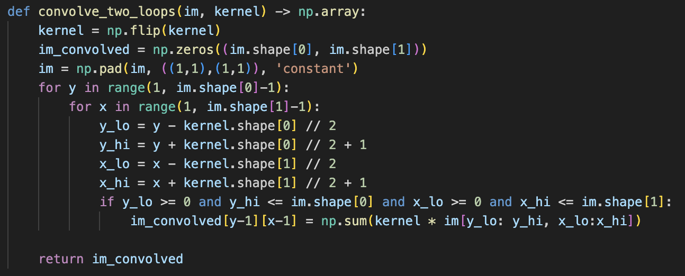
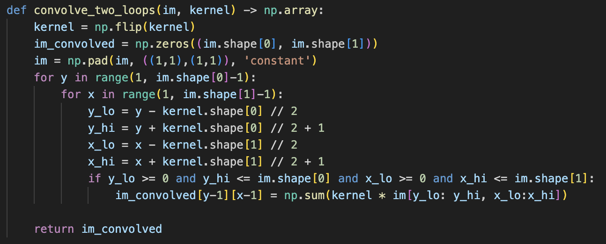


1.2 Below we also apply the finite difference operators to camera man image, and take the magnitude of these two convolved images combined to create a gradiant magnitude image, which highlights the greatest changes in the x and y directions (edges). Using a threshold of 45 (determined qualitatively), we binarize this image to suppress the noise and highlight the real edges. Below we see the original image, its convolution with the finite difference operator in the x direction, the y direction, and finally the binarized gradiant magnitude image.
 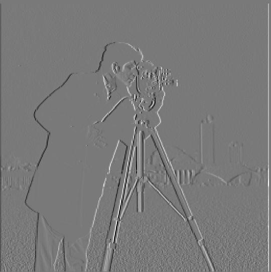
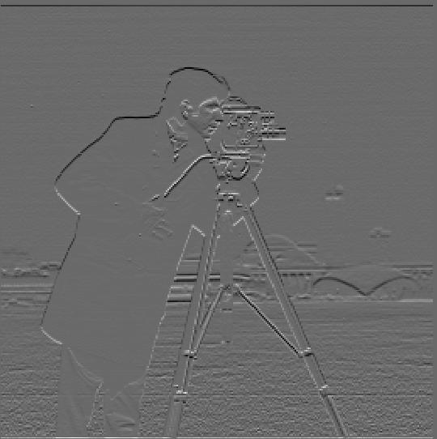
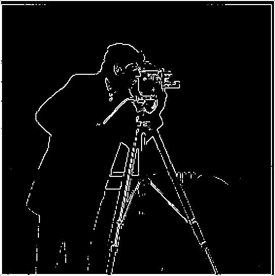
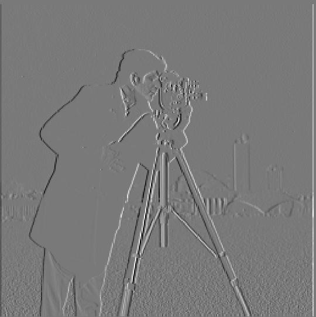
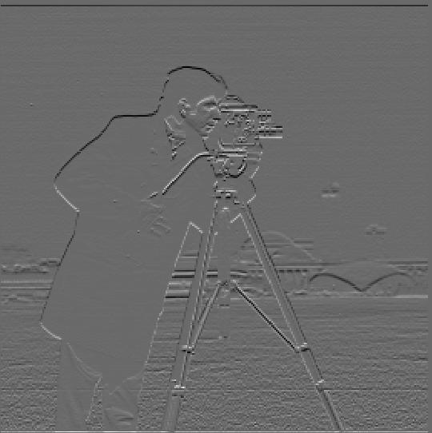
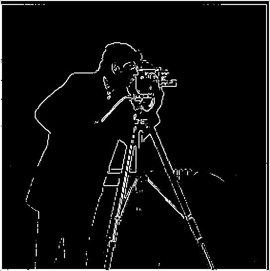
1.3 Here we introduce an additional convolution with the Gaussian filter to reduce noise. This allows us to reduce the threshold when binarizing the image. We can achieve the same result by creating a derivative of the Gaussian filter and convolving with the cameraman image. Below is the original gradient magnitude image followed by the binarized image at thresholds 10, 25, and 40.


Visualization of gradient orientations in HSV colorspace: Here we visualize the orientations of the gradient with colors on cyclical color wheel corresponding to the direction (shown as hue), and the magnitude of the gradient affecting the saturation and value of the pixels. We see that the bottom of the swim cap is roughly yellow while the top right is magenta. In these spots, the large changes in color are vertical and horizontal, with their colors roughly 90 degrees apart on the color wheel.

Part 2: Frequencies
2.1 Image Sharpening By applying a low pass filter to an image and subtracting the result from the original, we are left with only the high frequencies, which can be added to the original image to give the illusion of a sharper image. See two examples below with the original image, its high frequencies, and to its "sharper" creation.
 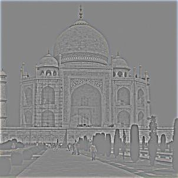
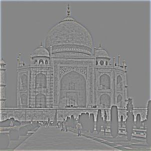

We can apply the same transformation to the high quality image below.

And below, we see the blurred image, the high frequencies of the image, the "sharpened" image, and finally a version that is blurred and then resharpened. Mathematically, this final image is the same as the original.


2.2 Hybrid Images
Using a high pass filter on one image and a low pass on another, we can align the images strategically to create an image that appears different
from different viewing positions. From up close, the high frequencies dominate while from afar the low frequencies do. Original images are displayed below
along with the high pass, low pass, and combined versions.


Fourier Analysis: Below, we consider the original images in the Fourier domain. (Trump on the left, baby on the right)


Another hybrid image example. The low frequencies in this example are still prominent up close, creating a much more blended-type image up close.


We can also use color to enhance the effect. The colors from the low frequency image are much more dominant than those in the high frequency image. Below, from left to right, we see the high frequency image in color, the low frequency image in color, and finally both in color. The first image has the effect of highlighting the child more from the background. The second and third image appear nearly identical, and give color to the baby's face. If the images were overlapping more, perhaps this effect would work to color both images effectively. Here, however, the color of the low frequency image is very noticeable and distracting up close. Ultimately the most effective blend is the first one.

2.3 Gaussian and Laplacian stacks Below we can see the Laplacian stacks used to merge the apple and orange images.


 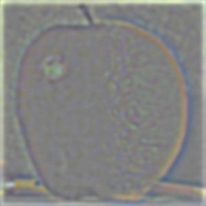
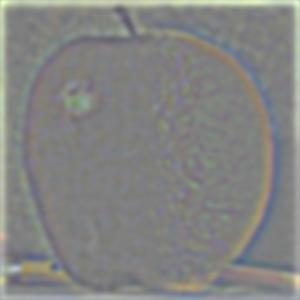


 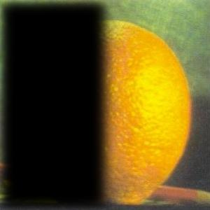
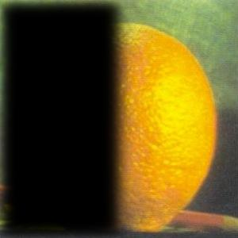

2.4 Additional multiresolution blending


Using color to enhance the effect: multiresolution blending makes sense when the color saturation in each image is roughly the same. I have strategically chosen all the previous images to meet this requirement. However, if we blend the apple (undersaturated) and the coke (oversaturated) as shown below, the effect is less convincing despite red being blended with red. Below, using a simple masking technique to dampen the color of the coke can, the resulting blended image is more convincing. While this masking technique created other issues with the coke image, the second image below still illustrates how images with similar color channels can blend more effectively.
 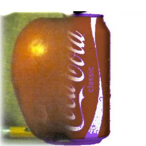
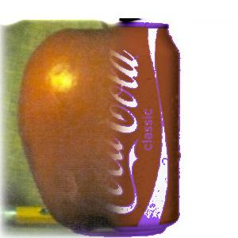
If we instead match the saturations, the image blending is much more convincing.